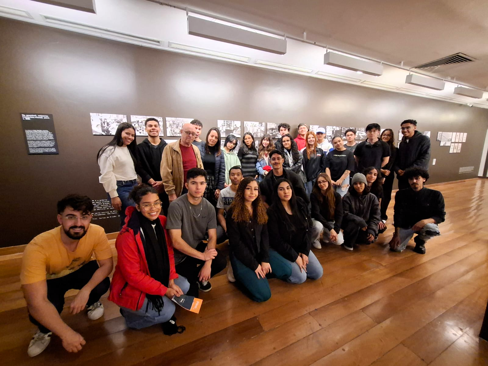

Sobre Nós!

O projeto Pequenos Programadores foi criado à partir de uma atividade desenvolvida para uma turma da Rede Despertar Sonhos, com o objetivo de aprender sobre administração e desenvolvimento profissional nas áreas desejadas pelos alunos.
O projeto Pequenos Programadores foi criado para ajudar crianças e jovens a se desenvolverem na área da tecnologia e programação, preparando-os para a nova revolução do mercado de trabalho.
Nosso objetivo é ensinar conceitos básicos de programação de forma divertida e interativa, utilizando jogos e atividades lúdicas.
Com o Pequenos Programadores, queremos inspirar a próxima geração de desenvolvedores e inovadores, proporcionando uma base sólida em tecnologia desde cedo.
Junte-se a nós nessa jornada de aprendizado e descoberta!